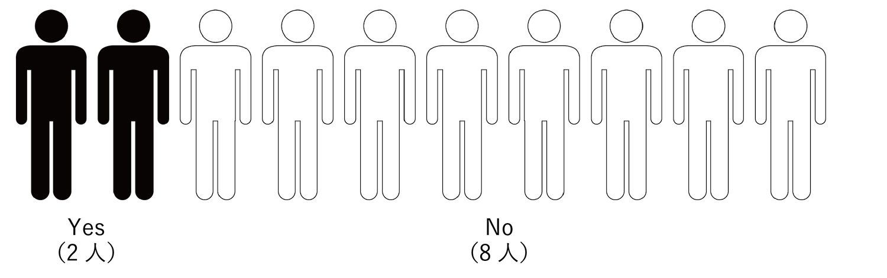

▼
※ポートフォリオ面談①でいただいたフィードバックをもとに、企画書の内容を少し変更しました。
旧企画書はこちらのページにございます。
食事前に手を洗っていますか？（情報科学芸術大学院大学 学内調査 2020年3月上旬時点） 
学食を利用する学生にアンケートを行ったところ、この状況下にも関わらず、
私の大学では10人中8人が食事前に手を洗っていないことが判明しました。
その理由のうち、「手を洗わなければいけないと知っているが、面倒だからしていない」
という回答が最も多い結果となりました。
この課題に焦点を当て、学生が使いたくなるような石鹸「せっけん食券」を提案します。
ちょっとしたプレゼントとして、「石鹸」が贈られることが多々あります。
そこでは、普段使っているものとは違うような「見た目の可愛さ」や「香りの珍しさ」が、
プレゼントに選ぶ基準の一つになっているようです。
それらには、特別感を演出し、貰った人の心をトキめかせる効力があると考えられます。
そこで、“学食ならでは” の「見た目の可愛さ」と「香りの珍しさ」を持ち合わせた石鹸をつくることで、
学食利用者の「石鹸を使ってみたい欲求」を喚起させられるのではないかと考えました。
さらに、既存の手洗い場のように、ただ水道のそばに石鹸を置いておくのではなく、
食券の台紙を紙石鹸に代替することで、必然的に学食の利用者全員に石鹸を配布できるようになります。
彼らは、実際に石鹸を手にしてしまうことで「石鹸を使ってみたい欲求」が増大し、
手を洗うことが「楽しみ！」と思うのではないでしょうか。
●せっけん食券の「見た目」と「香り」
学食のデザートメニューに因んだ「香り」と、それを連想させるような「見た目」のせっけん食券が、
ランダムに食券機から発券されます。「使ってみたい欲求」に加えて「食欲」をも唆られます。
●せっけん食券の使用方法
①食券機で食券を購入 ②食券として使用 ③水に濡らして石鹸として使用